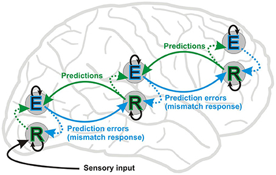
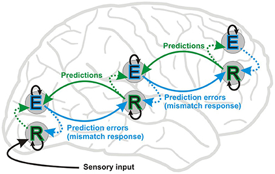
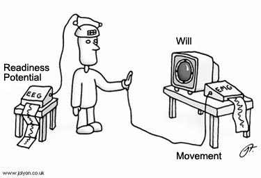

Predictive Codding
this is the ability to predict events based on sensory stimuli and information present .
this is the ability to predict events based on sensory stimuli and information present .
for any kind of decision to occur, there needs to be a potential that instigates that decision. It's called the readiness potential.
